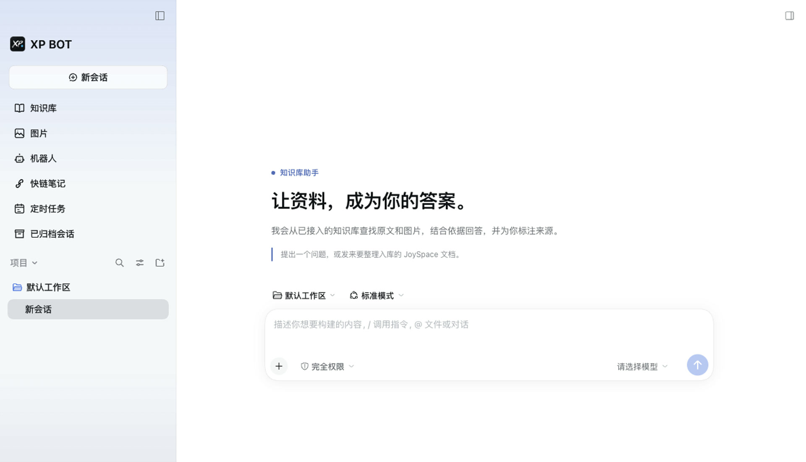

真实自动化项目
重复的工作，已经有了自己的流程。
预警监管 · 素材巡检 · 新品打标 · 售后分析
繁事，简办。
让自动化、知识与创作，接着你的工作往下走。
macOS 开发预览

真实自动化项目
预警监管 · 素材巡检 · 新品打标 · 售后分析
RAG 知识库
自然语言提问 · 原文与图片检索 · 来源引用

图片与模板
参考图 · 创作规则 · 模板保存与复用
自动配置机器人
状态检查 · 配置引导 · 授权后验证
公司路径已内置
选择线路 · 配置模型 · 测试后进入
模板、任务及接入界面为实机录制，配置信息已遮挡。知识库完整问答演示待补录。
一个工作空间
知识库、图片、机器人与真实项目，各有位置。展开一个功能，看看它在工作里怎么用。
先从资料里找依据，再回答。原文、图片与来源，一起带进对话。
预警、巡检、打标、售后分析。把已有项目沉淀成可复用的工作流程。
把参考图和创作规则保存下来。换内容，沿用好风格。
能自动配置的由助手完成，需要你登录或授权时再提示。
自动化，才是重头戏。
从一次对话，到一套可复用的流程。这里的案例来自 XP BOT 里已经存在的置顶项目。
原来 · 一次手工重复工作
1–2 小时现在 · 已配置的流程
后台 按计划执行创建者的日常使用经验。不同项目的耗时、自动化程度和运行条件不同；已配置计划的任务，需要电脑与相关服务保持可用。
监测与提醒
读取待出库记录，核对页面总数与抓取结果，再按类目和商家汇总。报告先生成，通知按已配置的授权规则处理。
既有项目包含按时执行、异常重试与回执核对；本页不触发真实群消息。
查看已配置的任务、执行时间与状态。九个项目的步骤和交付在上方逐一展开。
RAG 知识库
RAG，就是“先检索，再回答”。把已接入的操作手册、商品资料和规则文档变成可提问的知识。少翻几份文件，也能知道答案从哪里来。
完整问答与来源演示，待补录。
使用已配置的知识库。需要添加资料时，可在授权后整理 JoySpace 文档入库。
例如“SPU 和 SKU 有什么区别？”系统先检索相关原文与图片，再结合资料组织回答。
按来源、章节和行号回查原文，打开相关原图，再带着上下文继续追问。
查规则找操作要求，回查原文。
找资料从多个文档里定位线索。
看图文图片、截图与正文一起查。
继续问沿着来源和上下文往下问。
机器人配置助手
检查状态、补齐设置、验证连接。本人登录、创建应用和必要授权，在需要时由你完成。
公司接入路径已内置
已有公司模型权限与额度？选择模型，填写自己的 Key，先测试连接，再进入工作空间。公司与个人配置分开保存。
适用于已有公司授权和额度的环境；模型和外部服务费用按实际配置执行。
图片与模板
带上参考图，把构图、配色与文案要求整理成模板。保存后，从图片会话右上角再次调用，补充这一次的新需求。

保留你的创作规则。
模板可保存参考图与创作规则，还能预览原图中必须保留的边框和固定文字。图片生成需要独立生图服务与权限。
把已经走通的工作方法保存为技能。下次从同一套流程继续，减少重复搭建。
文件以可点击链接或卡片交付。图片留在会话中，支持查看、保存与侧栏预览。
记录常用入口与工作线索，支持编辑、完成状态及自动保存。
把长期工作放进项目，把常用会话置顶。展开、折叠与搜索，让线索回到眼前。
使用已有权限接入合适的模型。公司与个人配置独立保存，先测试再进入。
查看任务来源、周期、状态和记录。关闭时保留计划，需要时确认重新开启。
XP BOT for Mac
产品先与你见面。
可分发的 macOS 安装包，正在准备中。
尚未开放公开下载。发布后将在这里提供安装包。
还不能。当前是 macOS Apple Silicon 本机开发版，尚未完成可在其他电脑安装使用的分发包。安装包准备好后，会在本页提供下载入口。
需要。使用聊天能力前，请在应用设置中配置你有权使用的模型 API 并测试连接。图片生成还需要独立的生图服务与权限。服务可用性与费用以对应服务商为准。
需要先完成相应配置。知识库能力依赖已接入的兼容知识服务；当前机器人助手面向京 ME 机器人，需要对应账号、应用凭据及授权。进入助手界面不会自动发送消息。
本机运行的自动化，需要电脑和相应服务保持可用。后台按计划执行可以减少手工操作，但不等于电脑关机后仍会执行。请按任务的实际运行环境安排计划。
XP BOT 是在 Mac 上运行的桌面客户端。模型请求、图片生成以及外部知识与机器人服务，仍需对应的网络连接；数据处理方式取决于你选择和配置的服务。
XP BOT 是基于 DeepSeek Harness 定制的独立桌面应用，保留其原生对话体验，并加入知识库、图片模板及工作管理等扩展。XP BOT 不是 DeepSeek 官方产品。